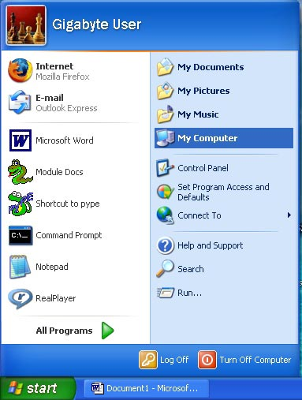
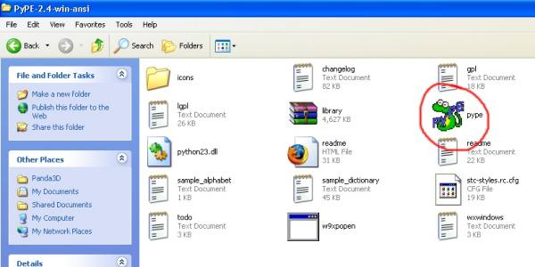
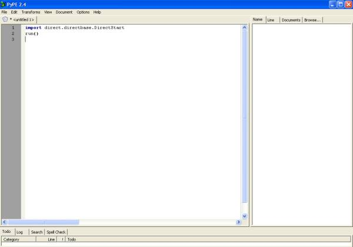
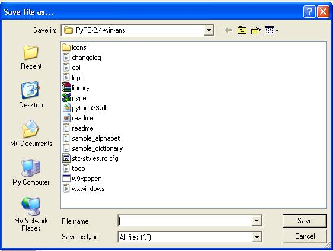
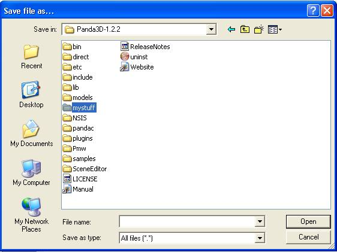
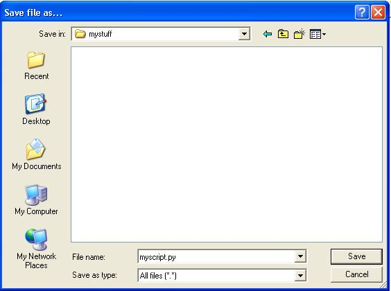

This page is not in the table of contents.
Creating a Program: General Outline
Panda3D is a library of subroutines; not an application. This means that
unlike all the other programs on your computer, you won’t find any program
icons or shortcuts to start it. Instead, you must use a
programmer's editor to create your program. The basic steps are:
- Create an empty directory for your program.
- Obtain a programmer's editor.
- Start the programmer's editor.
- Type in a program into the editor.
- Save the program in your program's directory.
- Start a command prompt.
- Change directory to your program's directory.
- Run the program using 'python.exe'
These steps will be explained in more detail below. The detailed descriptions are for windows users and cover only the PyPE editor. Linux users, you're on your own.
Possible programmer's editors are:
Windows:
Linux:
The next part of this page will only explain usage with PyPE.
Creating a Directory for your Program
So, you now need to create a place where you can save all your scripts. Panda3D can run a script from anywhere on your computer, but it looks for models and other assets in the folder that it is run from. If those assets aren’t present, then you’ll get an error message when you try to run it. So, I believe that the easiest thing for the beginner to do, is to make a new folder in the main Panda3D directory itself (which already contains all the models and other assets that you’ll need).
To do this, click your computers ‘Start’ button, then ‘My Computer’.

Then double-click ‘Local Disk (C)’ (if the contents of this drive are hidden, just click ‘Show the contents of this folder’). Now find the Panda3D folder and double-click on it to open it.
On the top menu bar click ‘File > New > Folder’. This will create a new folder in the Panda3D directory, backspace out the name and type a new name for it (I called mine mystuff).
Obtaining a Programmer's Editor
One of python’s strong points, is that you don’t need a compiler to write your scripts, however, you do need a good editor. Do not try to use Windows Notepad or Wordpad: they are not designed for this. Instead, you will need a programmer's editor. A well-known python editor is PyPE (which is completely free and makes writing python scripts a whole lot easier). You can download it from this location:
http://sourceforge.net/projects/pype/
If you're using Windows, download the PyPE-2.8-win-ansi.zip (as of writing this was the latest version). You don't need to install this program, you just download and unzip it somewhere, then open the unzipped folder and double-click on the PyPE icon to run it (or right-click on the icon and send it to the desktop as a shortcut, then simply run it by double-clicking the icon on your desktop).

Typing your Program into the Editor
Open PyPE, then click ‘File > New’ on the top menu bar to open a new work environment. Now type the following code (or just copy and paste it):
import direct.directbase.DirectStart
run()
Notice that PyPE automatically highlights certain words and numbers the lines for you. This is a very nice feature which makes finding errors much easier.

You’ve just written your first Panda3D script. It’s not much, but those few lines of code tell Panda3D to start. But before you can run this script, you must save it. So click ‘File > Save As’ on the top menu bar and a new window should open.

At the top of this new window there is a ‘Save in:’ text box, which is pointing to ‘PyPE-2.8-win-ansi’, you DON’T want to save your script there, so click the little down arrow beside the text box, then scroll down the list and click ‘Local Disk (C)’, then double-click on the Panda3D folder to open it. Find the ‘mystuff’ folder that we created earlier and double-click on it to open it.

Next, type a name for your script in the ‘File name:’ text box. I called mine myscript.py (make sure you put .py on the end of the name). Then click the ‘Save’ button.

You can now close PyPE.
Using NetBeans IDE
Download NetBeans IDE and install it.
Start NetBeans.
Select 'Tools'->'Python platforms'.
Under Platforms (at the left of the screen) select 'New'
A new browser window pops up, asking for an executable.
Browse to your panda folder, for example C:\Panda3D-1.6.2\python
and select python.exe
Now you have created a new platform you can use.
Now, create a new empty Python project.
Then, under Projects, right click your project and select 'Properties'
Under 'Categories', select Python.
At the right, 'Python platform'-> select your new platform.
Now you should be ready to compile your panda examples.
{kind=link}
{kind=link}
{kind=link}
{kind=link}
{kind=link}
{kind=link}